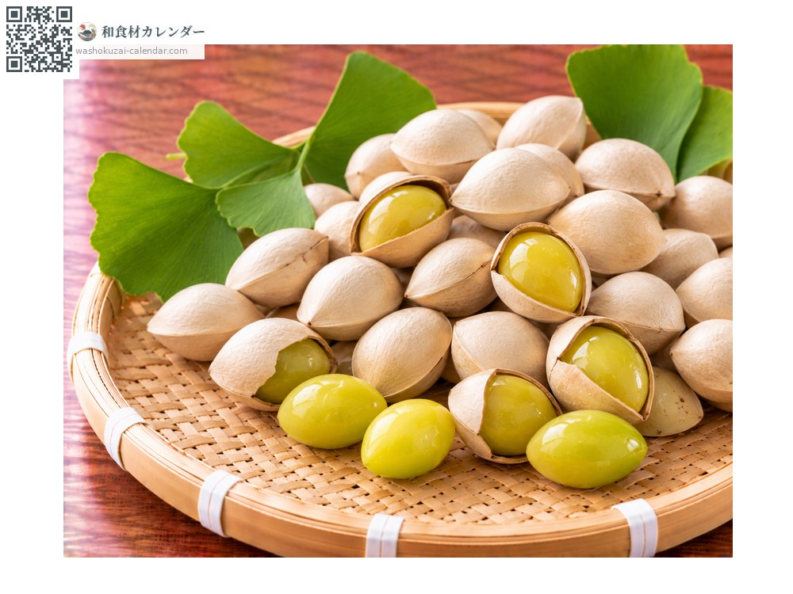
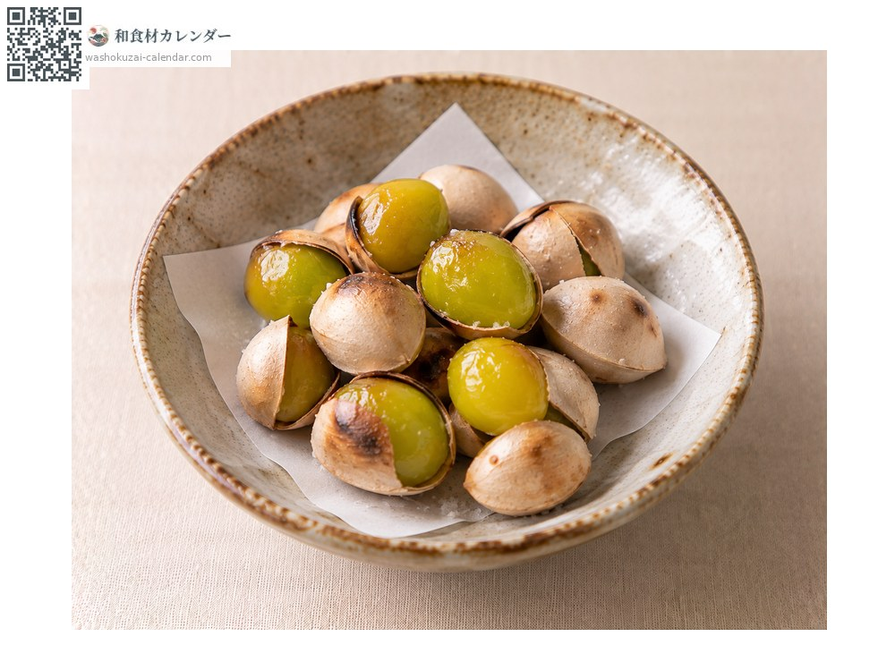
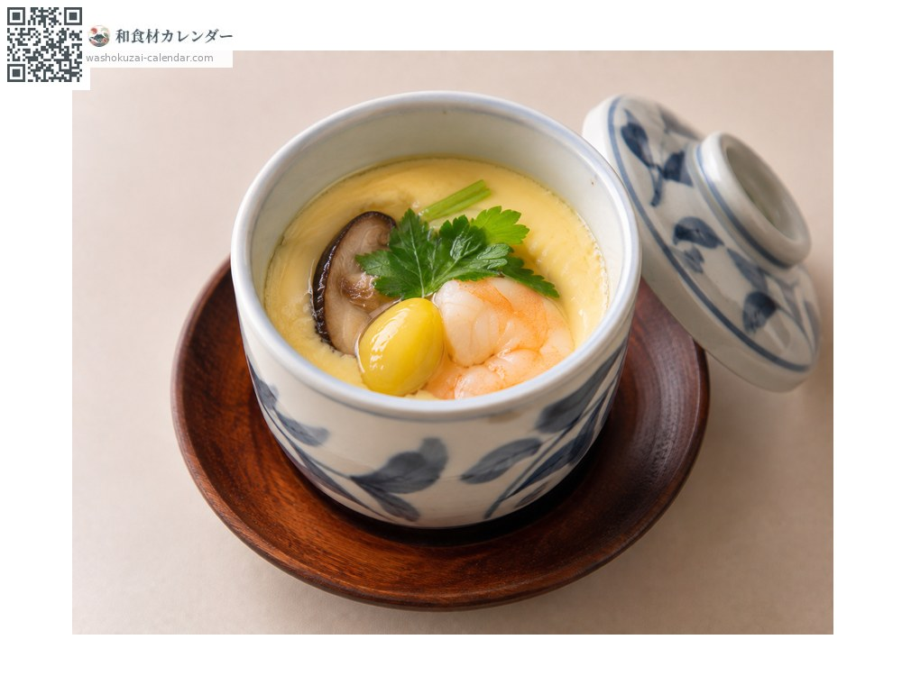
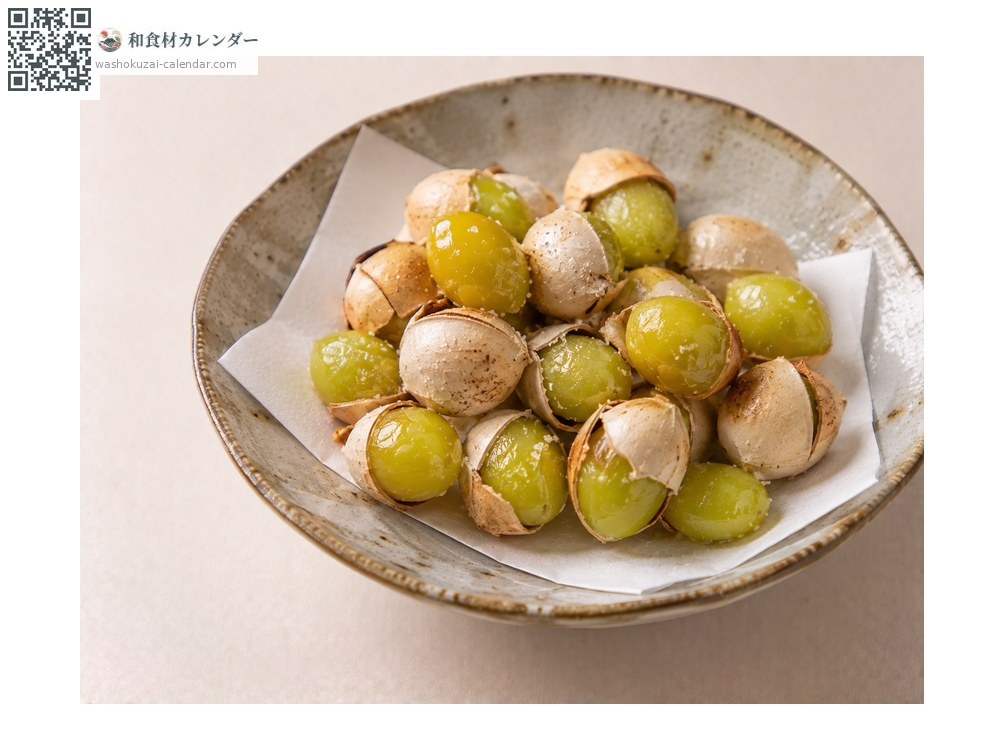
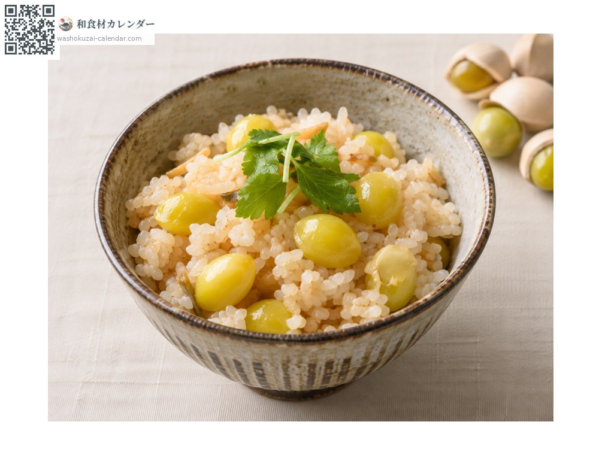

野菜
ギンナン
ぎんなん
旬は10月・11月

旬の時期
1月
2月
3月
4月
5月
6月
7月
8月
9月
10月
11月
12月
旬出回り
調理法

炒り銀杏
封筒に入れて電子レンジでも作れる。

茶碗蒸し
具として。

素揚げ
塩を振って。

炊き込みご飯
彩りに。
選び方
殻が白くきれいで、振っても音がしないもの。持って重みがあるもの。
保存方法
殻付きのまま冷蔵。乾燥すると実が縮む。むいたものは冷凍も可能。
主な産地
豆知識
食べ過ぎると中毒を起こすことがあり、特に子どもは注意が必要とされる。大人でも一度に多量に食べるのは避ける。